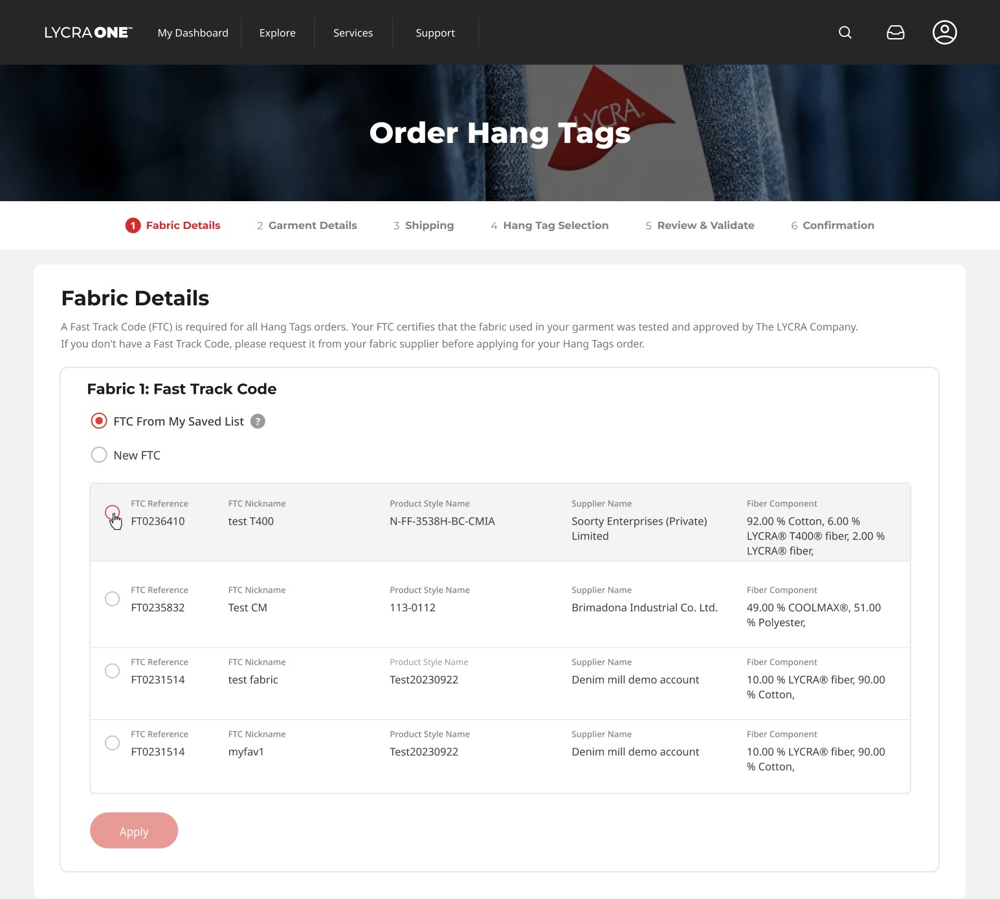
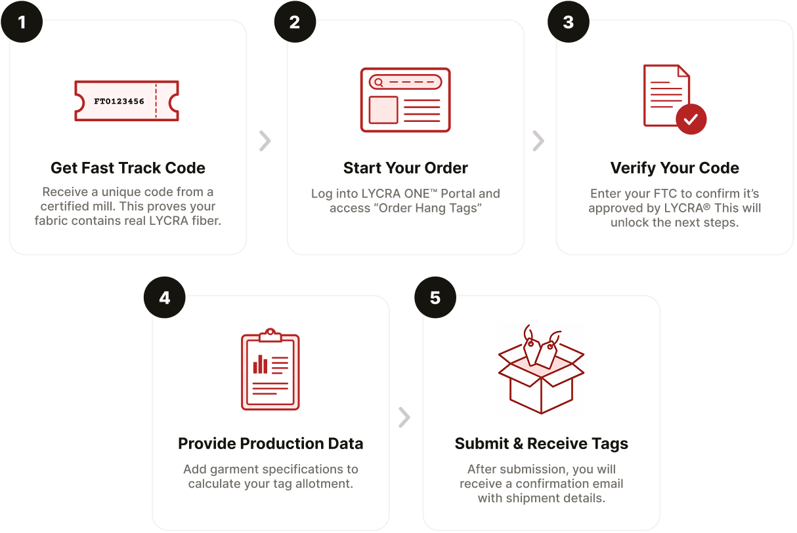

An end-to-end redesign that streamlines how brands and garment manufacturers order LYCRA® branded hang tags using a verified Fast Track Code

Overview
Order Hang Tags was the most-used flow on the LYCRA ONE™ portal, and it made people work for every order. Customers came back again and again to order the same branded hang tags, yet each time they had to recall and retype a nine-character certification code from memory, navigate seven separate page loads on a slow backend, and only discovered their mistakes after a reload sent them back to the start.
As the sole UX/UI designer, working before any design system existed, I rebuilt the flow from seven steps to five and reshaped it around a single idea: stop making users fight a slow, unforgiving system. Directional testing suggested task completion improved by approximately 45%, and the live experience went on to earn an 88% positive rating across 623 real users.
Faster completion
Directional (7:48 → 4:15)
Steps reduced
Streamlined from seven steps to five
Positive feedback
Positive ratings from real users
Responses
Feedback responses over eight months
Context
Before the redesign, here is what the system actually does and who uses it.
A LYCRA® hang tag is the branded label attached to finished garments (by brands like Lululemon or Under Armour) that certifies the fabric contains genuine LYCRA® fiber. To order them, a customer needs a Fast Track Code (FTC), which proves their fabric was tested and approved. Most customers arrive with a code already provided by their certified fabric mill; a smaller number complete LYCRA's separate fabric-testing process themselves.

Two traits shaped every design decision that follows:
The problem
This wasn't a peripheral feature. Order Hang Tags was the most-used experience on the portal day to day, and senior stakeholders were hearing consistent frustration from brands: the flow took too long, parts were genuinely confusing, and repeat users had to re-enter the same nine-character Fast Track Code on every order even when it was obviously a repeat. That combination of high volume and high friction is what secured the budget and made this a priority.
The legacy flow worked, but it was a struggle to complete. A routine reorder, something most users did repeatedly, demanded seven page loads on a slow backend, offered no protection against conflicting or invalid choices, and revealed errors only after costly reloads. My challenge was to reduce the effort and the error exposure without removing functionality, and to do it within technical constraints I could not change.
Discovery & research
The legacy experience ran seven separate page loads plus a confirmation. Because the portal averaged about six seconds per load, every single click was a six-second tax on the user.
With no budget for formal usability testing, I ran guerrilla usability sessions with four participants (friends and family acting as proxy users) using realistic test data: a sample Fast Track Code, purchase quantities, dispersion figures, a shipping address, and shipping method. I timed each session and noted where users got lost. Because these were proxy users rather than real brand customers, I treated the findings as directional signals about flow and friction rather than validation of domain specifics.
Across all four sessions, completion took between seven and ten minutes, and the same friction points recurred:
Dependent fields did not behave like dependent fields. Garment Segment and Garment Product Type were not visibly connected, so users did not know one depended on the other.
Errors surfaced only after a full page reload, so users discovered mistakes after a six-second wait.
“Save for Later Use” appeared even after a user selected a saved FTC, which led one user to accidentally create a duplicate FTC in the database.
Conflicting shipping options could both be selected. Users chose “Free Shipping” alongside a paid carrier, or selected free shipping when their address did not qualify, forcing a reload.
Hang tag results did not always match earlier selections, creating a dead end.
Underneath the surface symptoms, the legacy flow failed in two fundamental ways. This became the thesis for the entire redesign:
Fields didn't communicate with each other, which let users make conflicting choices the system should never have allowed.
The system only surfaced errors after a painful six-second reload, instead of catching them in the moment.
Almost every decision in the redesign traces back to fixing one of these two failures.
Design & solution
The redesign reduced seven steps to five and rebuilt every step visually and structurally. The through-line across every decision: minimize how often a user touches a slow, single-session system, and make invalid or conflicting choices impossible rather than correcting them after the fact.
The constraint as the lensThe single biggest constraint was technical: the system could not persist progress across sessions. Supporting save-and-resume would have required rebuilding the backend from the ground up, far beyond this project's scope. So the design challenge was not whether the flow should be single-session; it was how to make a single-session flow feasible and forgiving. I designed around it three ways:
The consolidation was not a solo exercise. Over several months, Enrique (business requirements), Sohail (CMS and data constraints), and I worked through every step on a shared Miro board: legacy screenshots, sticky-note debates over which fields to keep, cut, or merge, and multiple user states mapped per step. Each page went through several revisions before the structure settled. The annotated boards shown throughout this section are excerpts from that working process.
Showing the math: 7 steps to 5Two consolidations drove the reduction, each removing a full page load on a six-second backend:
The static Welcome screen became a popup, preserving its guidance while removing a page load.
Brand selection and hang tag selection, previously two separate pages, merged into one Hang Tag Selection step.
The flow was also reordered to open with Fabric Details / FTC, the gating requirement for the entire order.
The flow opened on a static Welcome screen that collected no input; it only displayed requirements, burning a full page load. Garment Details came before Fabric Details, so users could invest effort before ever reaching the Fast Track Code, the hard requirement that gates the whole order. And while the legacy Fabric Details page told users they could reuse “saved fast track codes,” the interface gave them no way to see or pick one: the only path was to type the full nine-character code into a field and press Apply. For a population that was overwhelmingly repeat users, every order meant recalling and retyping a code from memory.
On the Miro board, the Welcome screen was converted to a Step 0 popup so user input could begin on step 1, and the Fabric Details step was mapped across three distinct user states: a first-time user, a returning user selecting a new FTC, and a returning user selecting a saved FTC. Debates on the board included pagination versus showing the full saved list, whether multiple FTCs could be selected at once, and whether a confirm button was needed.
The Welcome content moved into a popup that front-loads everything a user needs to gather before starting, then drops them directly onto the first real input screen. The flow now opens on Fabric Details. Returning users pick “FTC From My Saved List” and choose their code from a real table (FTC Reference, Nickname, Product Style, Supplier, Fiber Component); first-timers pick “New FTC.” This is recognition over recall: instead of remembering and retyping a nine-character string, users see and select.
Research also showed users were confused by the always-visible Dispersion fields, which only apply to LYCRA FitSense® garments. I gated these behind a “Did you use LYCRA FitSense®?” toggle, so the dispersion fields appear only when relevant, hiding unnecessary complexity from the majority who do not use the technology.
One fewer page load. The make-or-break requirement (the FTC) is confronted first, so users without a code find out before investing effort. The dominant repeat user lands directly on the fastest path to their most common action. And progressive disclosure removes fields that don't apply to most users.
The Garment Details screen presented every field in a single undifferentiated block and gave no indication that fields were related. Three of four test users did not realize Product Type options depended on the Garment Segment selected above.
The thinkingI worked this step from the real data model: garment taxonomy spreadsheets sat beside the screens on the board, an engineering constraint on character limits was captured directly in the working notes, and the terminology shift from “Segment” to “Category” was decided live. The dependent-field behavior was genuinely collaborative; my early designs went through real back-and-forth with Enrique and Sohail, who pushed on how the dependencies should work and suggested ways to make them more efficient and logical from a systems and data standpoint. The final behavior reflects that input, not just my first draft.
The redesignThe screen was restructured into three clear sections, the segment dropdown was replaced with a scannable icon-based category selector, and explicit microcopy (“Product Type selections are based on the Garment Segment you selected above”) made the dependency obvious. Product Type options also filter live based on the selected segment, so users only see relevant choices.
The Garment Retail Region section here was a late addition requested by the Salesforce data team. See Reflection.
Sectioning chunks a previously flat, dense screen into digestible groups. The icon selector is faster to scan than a dropdown (recognition over recall again). And the field dependency that confused three of four testers is now explicit in both copy and live behavior.
In testing, users made two kinds of shipping errors. Some selected “Free Shipping” alongside a paid carrier. Others selected free shipping when their address did not qualify, and only discovered the error after a reload. Both shared a root cause: the legacy screen showed every option at all times and used a checkbox for free shipping, so it could coexist with carrier selections.
The thinkingThe board maps both the “from saved list” and “new address” paths, and debates whether the new courier/carrier entry should be a popup or an inline expanded section.
I rebuilt shipping so the interface only ever presents valid, non-conflicting choices:
The errors my testers hit are not validated against after the fact; they are structurally impossible, because invalid choices are never presented. This is the strongest form of error prevention: making the bad state unreachable.
The flow split brand selection and hang tag selection across two separate pages, with the relationship between them invisible. A user picked a brand, waited through a reload, and saw a list of tags with no visible connection to the choice they had just made.
The thinkingOn the working board I added a custom-hang-tag passcode gate (a Yes/No question that reveals the passcode field only when needed, a fifth instance of conditional disclosure) and worked out how the tag list should respond dynamically to the brand chosen above it.
The redesignI merged the two pages into a single step with two sections: Select Brand, then Select Hang Tags, where the available tags populate based on the brand chosen above. This removed a page load and made the dependency legible: the user can see that their tag options are a direct result of their brand selection.
One fewer page load, and the cause-and-effect is now visible rather than hidden across a page break. This became the core logic for the entire flow: every choice a user makes conditionally shapes what they see next, and the UI makes that cause-and-effect obvious (FitSense to dispersion, address to free shipping, segment to product type, brand to hang tags, and the custom-tag passcode gate).
The legacy Review step hid shipping details behind dropdowns and treated the confirmation email as the order record: the confirmation page literally instructed users to print the email and mail it in with their fabric sample.
On the Review & Validate board, sticky notes capture three deliberate decisions: shipping information should be clearly visible on page load (no dropdown), a document-upload affordance should encourage attachments, and a feedback module should be added to understand what could be improved. That feedback-module decision is the origin of this project's headline metric.
The Review step kept its core structure as a final summary before submission, but I improved scannability by surfacing shipping details on page load, clarified the optional document upload, and consolidated the confirmation into a single clear action. The Confirmation page was modernized with a clear “Next Steps” block and status communication, replacing the legacy “print and mail” instruction with a reassuring overview of what happens next. The on-screen confirmation now carries the full order record, rather than pushing users to the email. The step navigation also marks completed steps with checkmarks, so progress is always visible.
Shipping is legible at a glance, the order record lives on the page itself, next steps are clear and reassuring, and the embedded feedback module turned the final screen into an instrument for measuring the redesign's success.
Handoff
There was no formal design system, so handoff to the CI&T development team in Brazil ran on high-fidelity Figma files as the source of truth. When the team had questions about a specific interaction, they reached me async in Teams, or we jumped on a short call to talk through whether something needed to be added or changed.
It was a lightweight, conversational handoff rather than a documented spec process, and it worked because the conditional behaviors had already been thought through during design.
Outcome
A flow streamlined from seven steps to five, roughly 45% faster to complete, and an 88% positive rating across 623 real users.
The redesigned flow launched in July 2024. I validated it three ways.
I re-ran the identical moderated protocol with the same four participants on the new flow. Average completion time dropped from 7:48 to 4:15, a reduction of roughly 45%. Just as importantly, they no longer got stuck on the friction points that had tripped them up on the legacy version. Same participants, same protocol, measured before and after. Small sample, so I treat the time figure as directional, but the direction was strong and the friction points were verifiably resolved.
This reduction reflects two improvements landing together. The redesign cut the flow from seven steps to five and streamlined each form, while the development team also optimized code to reduce page load times. I do not attribute the full reduction to design alone, but the structural simplification (fewer steps, fewer page loads, less re-entry) was a direct driver.
I built an optional feedback module into the post-submission confirmation page (Good / Neutral / Poor, plus an open comment), which the CI&T team wired to a spreadsheet. Over eight months it collected 623 responses: 548 Good, 58 Neutral, 17 Poor, which is 88% positive. Because the survey appeared after submission, respondents had all completed an order, so the sample is self-selected and skews positive, which I weigh when interpreting the result.
The open-text comments mapped directly onto what I redesigned: speed, simplicity, and the streamlined ordering process. The strongest comments:
“Fast, simple, and easy to use, a great experience.”
“The new system is smooth, intuitive, and done in one go.”
“The ease of ordering they implemented is fantastic.”
Recurring positive themes across the open-text feedback:
I want to be careful here, because I did not have access to support-ticket or fulfillment data, so I cannot put a number on this. But it is worth stating the plausible business value. This was the portal's highest-volume flow, so cutting task time and making invalid or conflicting orders structurally impossible most likely reduced downstream load: fewer abandoned orders, fewer support contacts from stuck users, and fewer incorrectly specified tag orders reaching fulfillment. I am framing that as a reasonable expectation rather than a measured result, because the data to confirm it sat outside what I could see.
A satisfaction number that high is only trustworthy if you also show what people complained about, and separating the friction I owned from the friction I didn't is part of reading the data honestly. So I categorized every open-text complaint by theme and frequency, with a note on whether each falls inside my redesigned flow or in the broader portal.
| Pain point theme | Mentions | Responsibility |
|---|---|---|
| File upload failures & slow speed | 10 | Outside my flow |
| Login & password issues | 7 | Outside my flow |
| Order modification & form changes | 6 | Partly mine |
| Webpage performance | 6 | Outside my flow |
| Address selection & saved data | 5 | Partly mine |
| Customer support responsiveness | 4 | Outside my flow |
| Limited language support | 2 | Outside my flow |
Five of the seven themes sit entirely outside the flow I redesigned (login, file uploads, page performance, support responsiveness, language support). The ordering flow still earned 88% positive feedback while users were dealing with those broader portal issues.
The two themes I marked Partly mine deserve an honest word on why. Order modification refers to editing an order after it was submitted, which was a backend and order-management limitation, not something my flow design controlled (within the flow, users could already edit freely). Address selection and saved data is the fairer hit: some users still found picking and reusing a saved address more friction than it should have been, and if I ran this again it is the first interaction I would usability-test specifically. I am claiming the part I owned and not the part I didn't.
Reflection & next steps
Within the flow, users could freely navigate back and edit any step before submitting. The “cannot edit after submission” feedback refers to modifying an order once it had already been submitted and entered processing, a post-submission order-management capability outside this flow's scope. It is the clearest candidate for future work: a way to amend or cancel a submitted order without contacting support.
Some constraints simply exist, and good design works within them. Save-and-resume was the one thing testers would have valued most, and it was the one thing I could not give them: supporting it meant rebuilding the backend from the ground up, which this project could not absorb. That single-session limitation came from how the system was originally coded. Rather than fight it, I spent the design effort on making the constraint painless instead, front-loading requirements, saved lists, forgiving in-session editing. Not every problem is a design problem, and recognizing which ones are not is part of the job.
Align on scope with every team before designing, not midway through. A Garment Retail Region section was not in the original project scope, but once we consulted the team that operates the Salesforce data, they explained it would be genuinely useful. We had to go back and add it, which cost the development team extra hours and was avoidable. I now treat upfront alignment across every relevant function as part of discovery, not an afterthought.
With a constrained budget, not everything is in scope to change, and that is a legitimate tradeoff. The brand logos on the Hang Tag Selection step bothered me every time I opened the file, but they already worked, and redesigning them would have spent hours that the saved-FTC list, the conditional shipping logic, and the page-load reduction needed more. I left them alone. Knowing when not to redesign something, and where the limited hours actually move the outcome, is its own design decision.